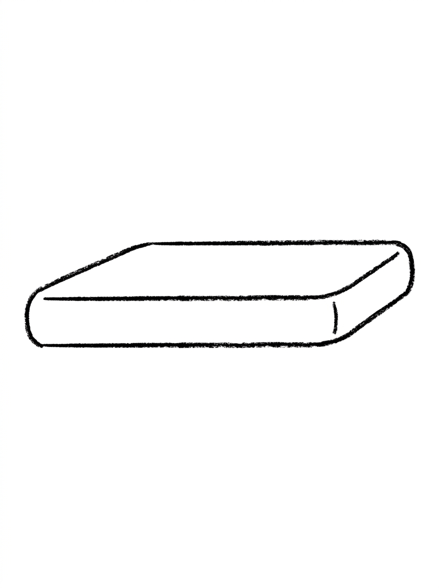
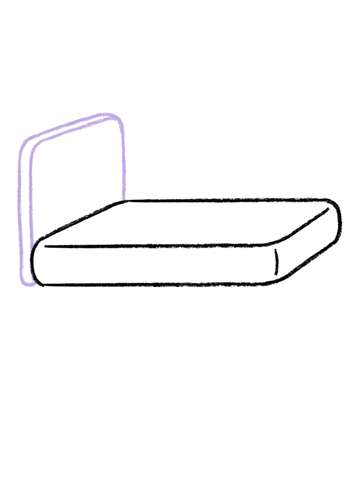
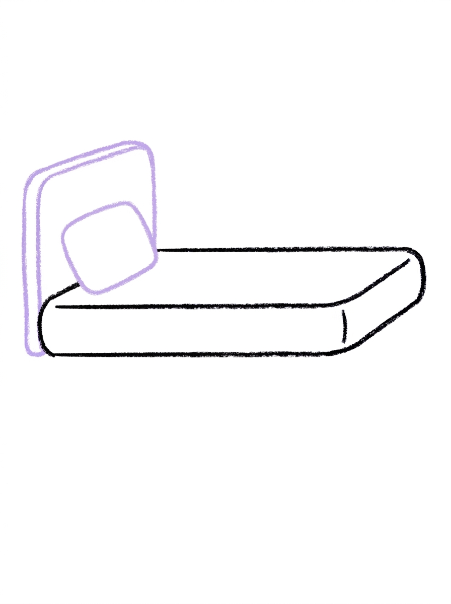
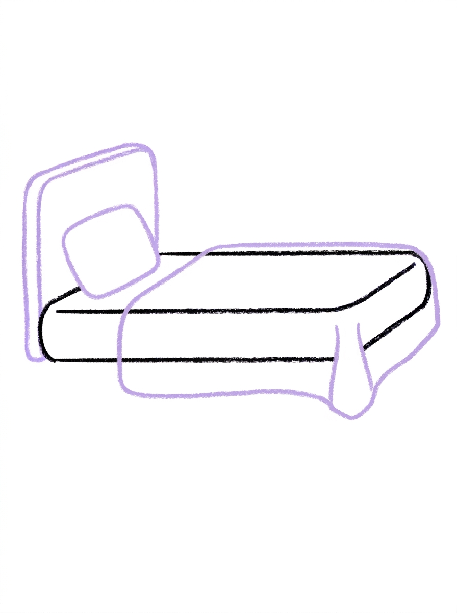
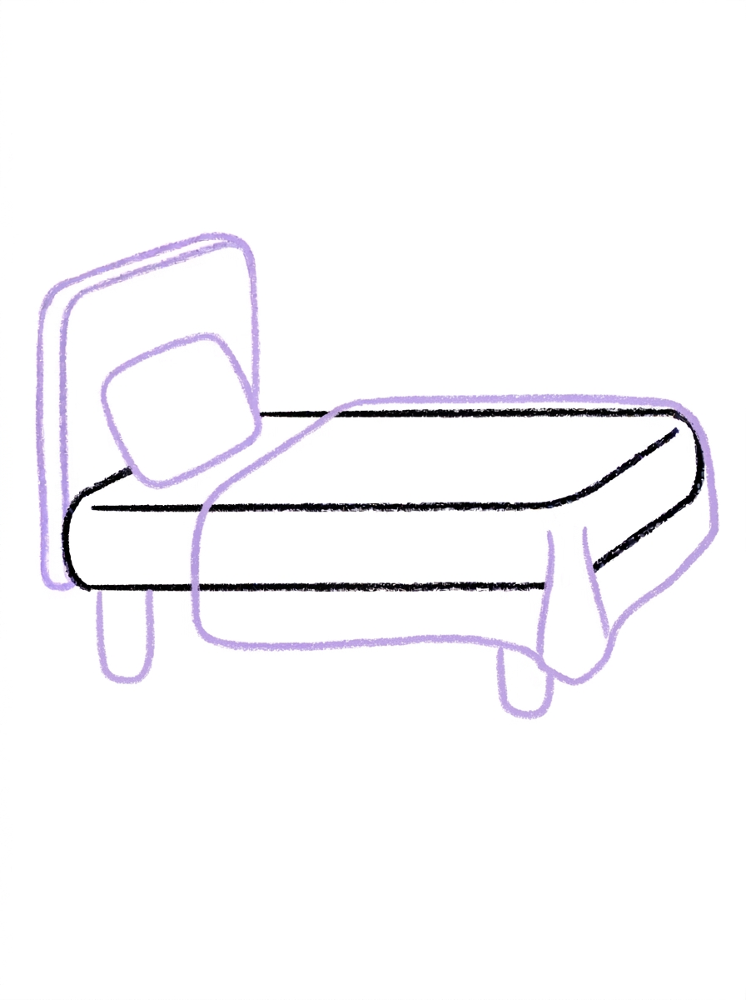
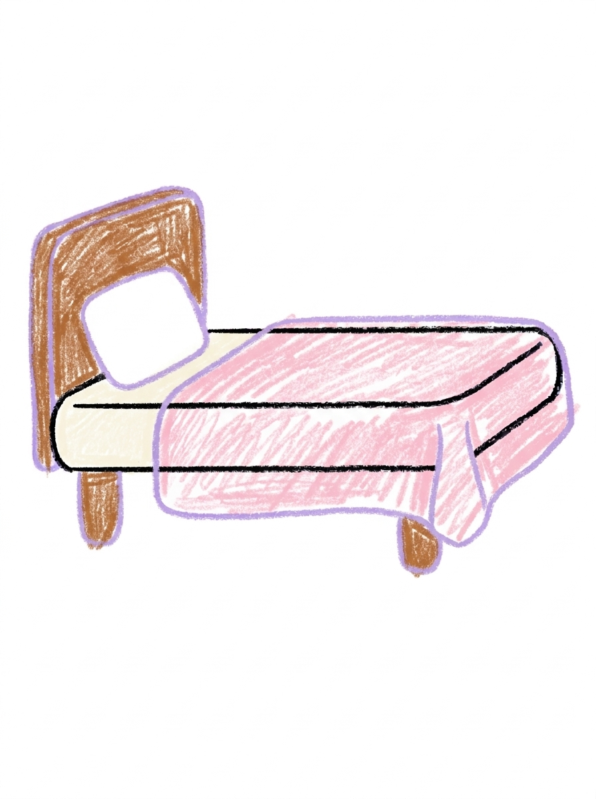

Bed Drawing for Kids How to Draw A Bed in 6 Easy Steps
Quick Answer
Draw a bed in six easy steps: a long low mattress, a tall headboard at one end, a soft pillow against it, a blanket over the top, and two short legs underneath. Color the blanket soft pink. Made for ages 3 and up — free printable, no signup needed.
At a Glance
- Subject: How to draw a bed
- Ages: 3+
- Steps: 6 steps
- Time: ~10 min
- Difficulty: Easy
- Supplies: Paper, crayons
A bed is the coziest drawing there is, and one of the easiest — it's just a tidy stack of rounded rectangles: mattress, headboard, pillow, blanket. If your child can draw a rectangle with soft corners, they can draw this snug little bed.
✏️ Draw Your Bed in 6 Easy Steps
One step per box — this step by step bed drawing shows each new part in a different color so kids can see exactly what changed.
Step 1: The Mattress

Draw one long, low rounded rectangle — that's the mattress.
Step 2: The Headboard

Add one tall rounded rectangle standing up at the left end of the mattress.
Step 3: The Pillow

Draw one small rounded rectangle on top of the mattress, right against the headboard.
Step 4: The Blanket

Draw the blanket over the rest of the mattress, hanging a little over the front edge.
Step 5: The Legs

Add two short legs under the mattress, one near each end.
Step 6: Color It In

Color the headboard and legs warm wood brown, the mattress cream, the pillow white, and the blanket soft pink. Great drawing!
📊 Bed Drawing by Age
Every age can join in — just adjust the job.
| Age | What they can do | Tip |
|---|---|---|
| 3-4 | Draw the long low mattress and color the finished bed's blanket soft pink. | Draw the mattress long and low in the middle of the page — the headboard needs height on the left and the legs need room below. |
| 4-5 | Add the tall headboard, the small pillow tucked against it, and the blanket over the mattress. | The pillow sits on top of the mattress right against the headboard — that little stack is what makes it read as a bed. |
| 6+ | Finish all six steps, including placing the two short legs one near each end so the bed stands level. | Older kids can add a sleeping teddy on the pillow — one round head and two ear circles is plenty. |
🖨️ Download Your Free Bed Drawing Printable
The printable lays out all 6 steps one per box, big enough for little hands — kids draw right alongside each step.
⬇️ Open Free Printable 🖨️ Print🎁 Free printable for ages 3+
🛏️ Bed Dream Page
Turn your bed into a dream scene: draw a sleeping teddy or doll tucked under the blanket with just its head on the pillow, a crescent moon and stars in the corner of the page, and a rug underneath the bed, then decide together whose bed this is — a princess's, a pirate's, or your child's own dream bed with a slide instead of a ladder. Write one sentence about the dream under the drawing (or dictate it for a grown-up to write) and it becomes a bedtime story page.
What You'll Need to Draw A Bed
All you need is a pencil, an eraser, and crayons or markers. For the colors in the tutorial, have warm wood brown ready for the headboard and legs, cream for the mattress, white for the pillow, and soft pink for the blanket. Regular printer paper or a sketchbook both work.
What They're Learning
This tutorial practices rounded rectangles in four sizes — long and low (mattress), tall (headboard), small (pillow), and short (legs) — great shape-control practice. Kids also work on stacking and layering, drawing one shape resting against another, the drape of an overhanging edge, and simple left-to-right sequencing from headboard to foot.
Make It Yours
Try a bunk bed by stacking a second mattress, pillow, and blanket above the first, a royal bed with a heart or star drawn on the headboard, a camping version with a sleeping bag instead of a blanket, or a pet bed drawn tiny beside it for a favorite stuffed animal. A bedtime scene with a moon in the corner makes a sweet goodnight card.
🛒 Our Favorite Drawing Supplies
These are the supplies we reach for in our own home — washable (because kids), quality paper, and enough colors to avoid fights.
As an Amazon Associate, MomYouNeedThis earns from qualifying purchases — at no extra cost to you.
💡 Bed Drawing Tips for Parents
Step 4's blanket overhang is the detail that makes the whole drawing work, and it's the one kids skip. Show them the picture first: the blanket's front edge drops a little below the mattress's front edge. One finger's width of overhang is plenty — more than that and the blanket starts eating the legs in step 5.
Keep the two legs in step 5 the same length and tucked one near each end of the mattress. If a leg lands in the middle, the bed looks like it might tip; if the legs are different lengths, kids often notice before you do and enjoy fixing it themselves.
🛏️ Beds Around the World
Not everyone sleeps in a bed like this one. In Japan, many people sleep on a soft futon mat laid on the floor and rolled away in the morning. In parts of South America, a hammock — a swinging cloth bed — is the coolest place to sleep. And plenty of kids everywhere think the top bunk is the best bed in the house.
Animals solve sleep their own way: birds tuck into nests, dogs curl into a circle, and bears sleep through the whole winter. People need serious sleep too — school-age kids do best with about 9 to 12 hours a night, which is worth remembering the next time bedtime gets negotiated.
✋ Warm-Up: Rectangle Families
A bed is rectangles wearing blankets, so warm up with rectangles. Draw a giant one, a medium one, and a tiny one — a family of three — then round their corners so they look soft. Try a tall skinny one and a long flat one too. Naming them ('the daddy pillow, the baby pillow') turns shape practice into a game younger kids ask to repeat.
Rectangle corners that slant a little are fine; beds are soft, and soft things sag. The only real fix worth making is a leg floating off the mattress — and even that one is solved by simply drawing the leg longer until it lands.
📖 Give Your Bed a Story
Every bed holds a sleeper, and every sleeper has dreams. Who is sleeping in this bed, and what are they dreaming about? Have your child dictate the dream in a sentence or two for under the drawing — dream captions are funny in the moment and priceless in a year.
For the next page of the bedtime series, the star tutorial hangs nicely over any drawn bed. A night sky above the headboard turns one drawing into a whole bedtime scene your child built themselves. Finish the bedtime scene with the sleeper from how to draw a person, or upgrade to royal quarters in how to draw a castle.
❓ Bed Drawing FAQs
What is the easiest way to draw a bed?
Start with one long, low rounded rectangle for the mattress, then stack the pieces on it: a tall headboard at the left end, a small pillow against the headboard, a blanket over the rest, and two short legs underneath. The six steps turn bedtime furniture into rectangles your child already knows.
What age is this bed drawing for?
It's made for ages 3 and up. Every shape is a rectangle with soft corners — the friendliest shape there is — and younger kids can do the mattress and coloring while older kids add the pillow, blanket drape, and legs themselves.
What supplies do we need?
A pencil, an eraser, paper, and crayons or markers. For colors you'll want warm wood brown for the headboard and legs, cream for the mattress, white for the pillow, and soft pink for the blanket.
Is the printable really free?
Yes — every printable on MomYouNeedThis is 100% free, including this bed drawing tutorial. There is no signup, no email, and no catch — just download, print, and draw.
How do I print it?
Open the PDF and choose Print, then set the scale to 100% (sometimes called Actual Size) so the steps print at full size. The tutorial is designed for regular US Letter paper, and plain printer paper works perfectly.
Which end does the headboard go on?
The headboard is one tall rounded rectangle standing up at the left end of the mattress. Left is simply where this bed's pillow end is — draw it tall enough to peek well above the mattress line, and the whole drawing instantly reads as a bed instead of a table.
How do I make the blanket look real?
Draw the blanket over the rest of the mattress, past the pillow, and let its front edge hang a little over the side of the mattress. That small overhang is the detail that makes the blanket look soft and tucked-in rather than painted on.
How many legs does the bed have?
Just two — one short leg under the mattress near each end. Because the bed is drawn from the side, only the two near legs show, and keeping them the same length keeps the bed standing level.
📚 Keep Exploring
- ✏️ All 76 Drawing Tutorials 76 free step-by-step drawing tutorials for kids.
- 🎀 Cute Coloring Free cute coloring pages for kids.
- ✏️ Drawing Practice Free printable drawing pre-writing worksheet for toddlers.